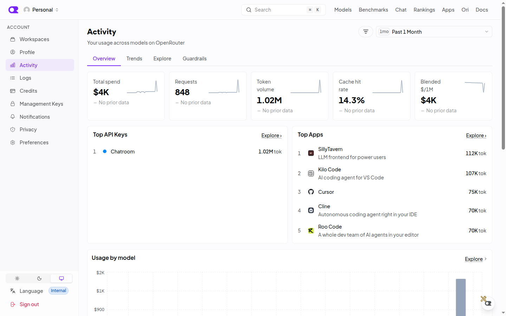
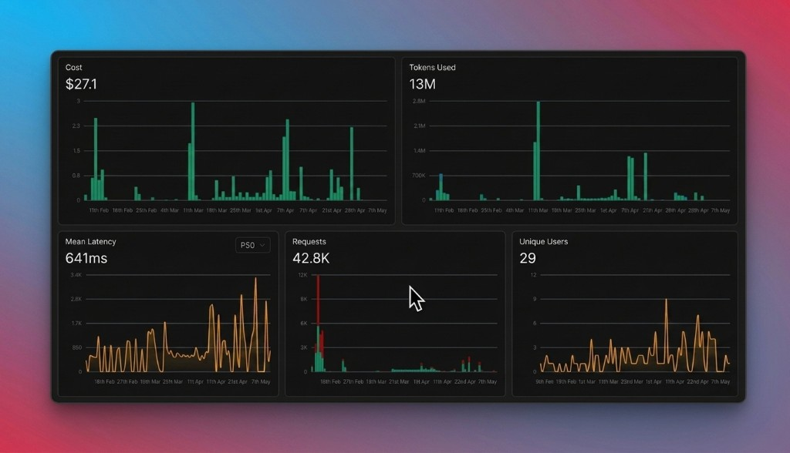
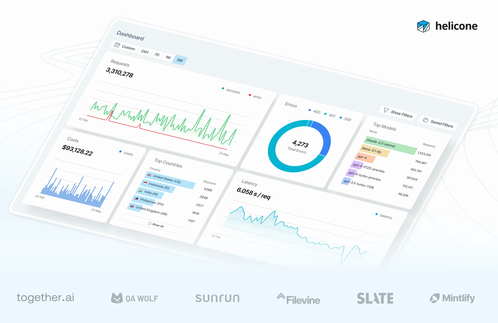
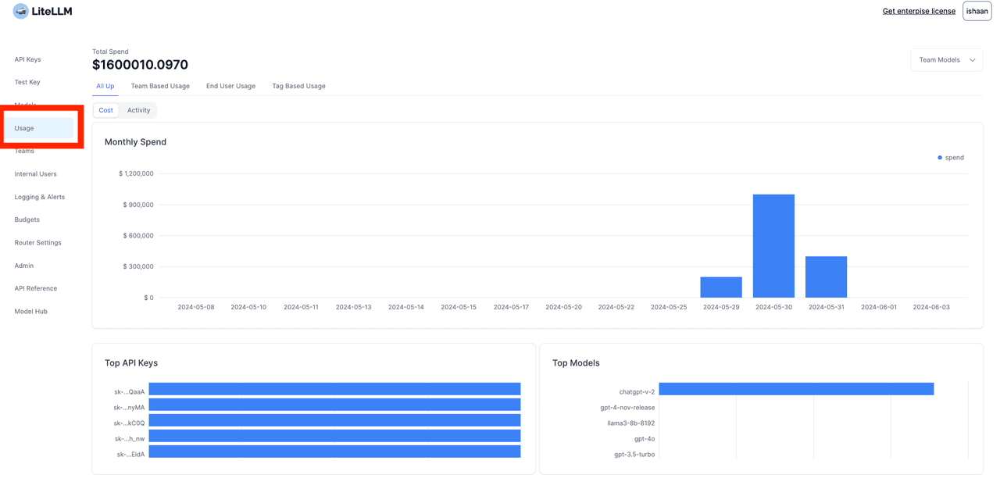
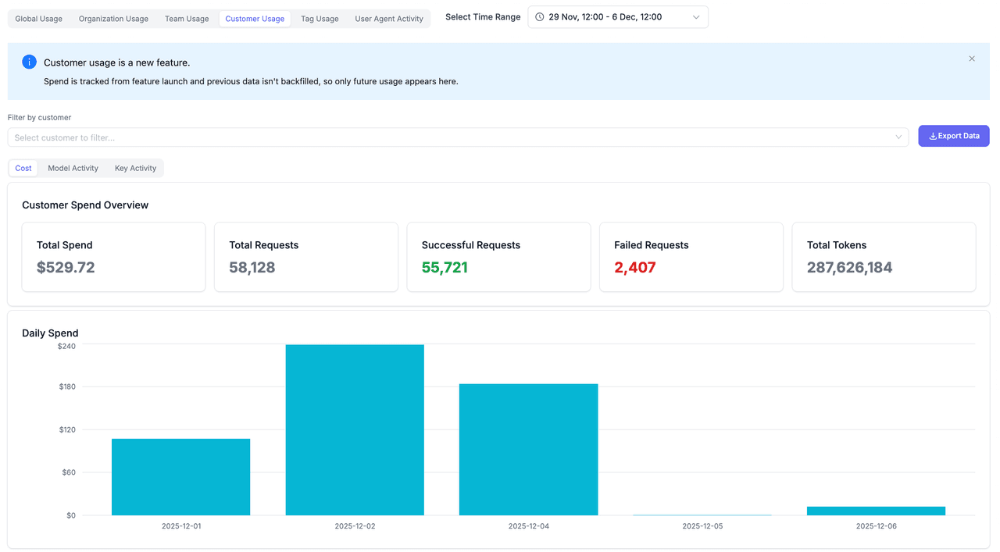
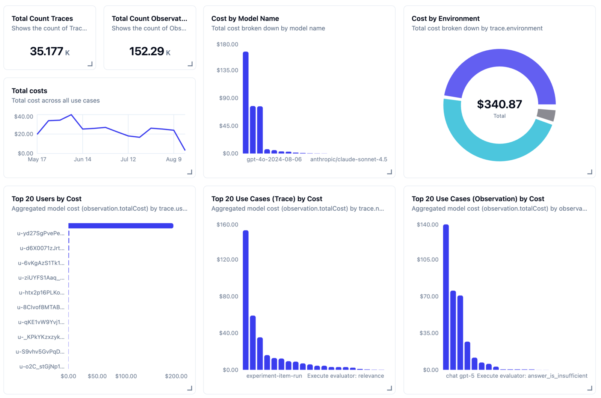
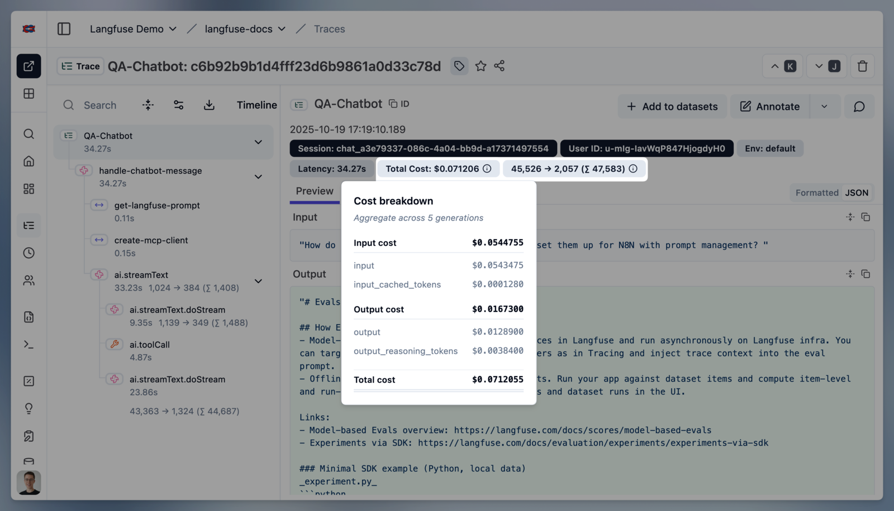
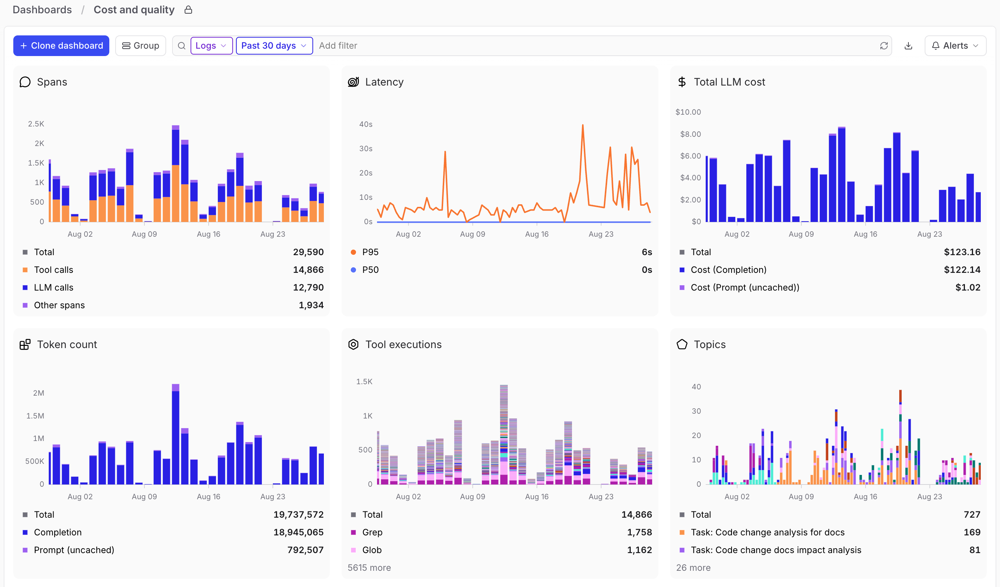

Study of OpenRouter, Portkey, Helicone, LiteLLM, Cloudflare AI Gateway, Langfuse and Braintrust. Sources are public docs, vendor blog posts and the vendors' own published screenshots. No accounts were opened, so "first screen" means what the docs and published images show, not a live tenant. Date of study: 2026-11-17.
input_cached_tokens as its own cost line per trace). LiteLLM exposes cache reads only in Prometheus.Caveat on fit: these are fleet and billing tools for many apps and users. Scope is a single-operator cockpit for interactive agent turns, where felt latency matters more than it does on a billing page. That argues for keeping one latency tile prominent, and for keeping the TTFT-by-layer waterfall (no peer has layer attribution, it is our differentiator), but behind a click rather than as the second screen-wide band.
| Product | Top row / first screen | Ranked or sorted by | Latency shown | Cache | Limits and plan | Per-model / per-key |
|---|---|---|---|---|---|---|
| OpenRouter Activity | Total spend, requests, token volume, cache hit rate, blended $/1M (sparkline and prior-period delta each) | Top API keys, top apps by tokens; Trends tab ranks by movement; Explore has rank-by and limit | Explore only: latency and throughput at p50/p90/p99. TTFT only in per-generation detail | Hit rate in top row; prompt caching chart; cache savings in generation cost | Credits, free-tier caps (20 rpm, 50 to 1000 per day), workspace budgets; separate pages | Group by model, provider, key, app, user, workspace, session (two at a time) |
| Portkey | Cost, tokens used, mean latency (p50 toggle), requests, unique users | Top models and top users by requests; Summary tab sorts by any column | Mean latency tile with a percentile dropdown (P50 shown). No TTFT in the analytics docs | Own tab: hit rate, simple vs semantic, speedup, savings | Not checked | Summary groups by service, model, any metadata key: requests, cost, avg latency, success rate, avg tokens |
| Helicone | Requests (success vs error), costs, errors donut, top models, top countries, latency (s/req) | Top models by requests, top countries | One latency tile, total seconds per request. TTFT per request in the requests table (secondary source) | Provider prompt caching supported; no cache tile in the hero image | Request, cost and property rate limits; alerts; weekly reports | Top models; custom properties for any slice; sessions |
| LiteLLM Usage | Total spend heading, then monthly spend bars; customer view adds requests, success, failed, tokens | Top API keys and top models by spend | Not on the Usage page. Prometheus has total, LLM API, TTFT and overhead latency histograms | Prometheus only (provider cache reads vs LiteLLM response cache hits) | tpm, rpm, parallel limits and budgets per key, user, team; dynamic allocation | Tabs: global, organization, team, customer, tag, end user. Cost vs Activity toggle |
| Cloudflare AI Gateway | Requests, tokens, cost, errors, cached percentage (docs list; no public screenshot found) | Not documented; GraphQL orders by cost or time | None in the analytics list. Log rows carry duration | Cached responses percentage | Fixed or sliding request limits, spend limits (beta) | Filter by provider, model, cost, tokens, one metadata key |
| Langfuse Home | Home defaults to: traces, model cost, latency percentiles, scores, model usage. Curated cost dashboard opens with trace and observation counts, total cost, cost by model and environment | Top 20 users, use cases and observations by cost | Latency dashboard; percentile widgets. TTFT supported via completionStartTime, not top row |
Cached token cost lines per trace | Alerts on spend thresholds; no gateway limits in the dashboard | By model, user, trace name, environment, prompt version |
| Braintrust Cost and quality | Spans, latency (p50, p95 lines), total LLM cost, token count, tool executions, topics | Group by any metadata field | One latency chart, p50 and p95. TTFT listed as an available metric | Prompt tokens shown as uncached; cache tokens priced in the cost chart | Alerts on error rate, latency, daily cost | Group by model, environment, user, metadata |
Vendor-published images, saved beside this note. Cloudflare publishes no dashboard image in its docs, so it has none here.
openrouter-activity-docs.png: OpenRouter Activity Overview, the real first screen.portkey-analytics.jpg: Portkey analytics from its docs (stylised backdrop, real tiles).helicone-dashboard.png: Helicone hero image from its docs. A marketing render, so tile choice is real but proportions are not.litellm-admin-ui-spend.png and litellm-customer-usage.png: LiteLLM Usage tab (2024 build) and Customer Usage (late 2025).langfuse-cost-dashboard.png and langfuse-costs-usage.png: Langfuse curated cost dashboard, and a trace with latency and cost breakdown.braintrust-cost-quality.png: Braintrust built-in Cost and quality dashboard.






